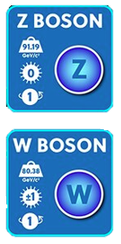

Notes
Welcome to thenLCARS; • Notes
Replace this content.
Live long and prosper.
Replace this content.
Live long and prosper.
The Standard Model is a theoretical framework that describes the fundamental particles and forces that make up the universe. It identifies three of the four fundamental forces of nature: the strong nuclear force, the weak nuclear force, and the electromagnetic force, while gravity is not yet integrated into this framework.
The Standard Model describes matter as made up of particles called fermions, which include quarks and leptons. Quarks are the building blocks of protons and neutrons, while leptons include electrons and neutrinos.
The interactions between these particles are mediated by particles called bosons, such as the photon, W and Z bosons, and gluons.
Mediates the electromagnetic force.
Mediates the weak nuclear force.
Mediate the strong nuclear force.
Chromodynamics is the study of the strong nuclear force, which is one of the four fundamental forces of nature. The strong nuclear force holds atomic nuclei together and is responsible for the stability of matter. Chromodynamics describes the interactions between subatomic particles called quarks and gluons, which are the fundamental constituents of protons, neutrons, and other hadrons. The theory of chromodynamics is based on the principle of quantum chromodynamics (QCD), which describes the behavior of quarks and gluons in terms of their color charge. The interactions between quarks and gluons are mediated by the exchange of virtual particles called gluons, which carry color charge. Chromodynamics is an important area of research in particle physics and has contributed significantly to our understanding of the structure and behavior of matter.
Each quark has 3 color charges, \(RGB\), in cluding its anti-state, \(\overline{R}\overline{G}\overline{B}\).
(The gluon colors are not real. Color just gives us a way to keep track of the charges associated with the strong force.)
There are 8 types of gluons, and each one interacts with a specific quark and facilitates its transition between different states of charge. The "superposition of color" exhibited by gluons reflects the current state of quarks and their transformational properties.
Each quark and its anti-matter component have 3 charge states.

Feynman diagrams are a graphical tool used in particle physics to represent the interactions between particles. They were developed by physicist Richard Feynman in the 1940s as a way to simplify complex calculations involving particle interactions.
In a Feynman diagram, particles are represented by lines, and interactions between them are represented by vertices. The lines can be straight or wavy, depending on whether they represent matter particles (fermions) or force-carrying particles (bosons).
The vertices indicate the points where particles interact and exchange other particles. By following the lines and vertices, physicists can calculate the probability of a particular particle interaction taking place.
Replace this content.
Live long and prosper.
Windows is a popular operating system used by many people around the world. It is known for its user-friendly interface and compatibility with a wide range of software programs.
macOS is an operating system designed specifically for Apple computers. It is known for its sleek design and user-friendly interface, as well as its compatibility with a wide range of software programs.
Linux is a free and open-source operating system that is known for its stability and security. It is used by many developers and IT professionals because of its powerful command-line interface and ability to customize the system to fit their needs.
Replace this content.
Live long and prosper.
Replace this content.
Live long and prosper.
Replace this content.
Live long and prosper.
Replace this content.
Live long and prosper.
Replace this content.
Live long and prosper.